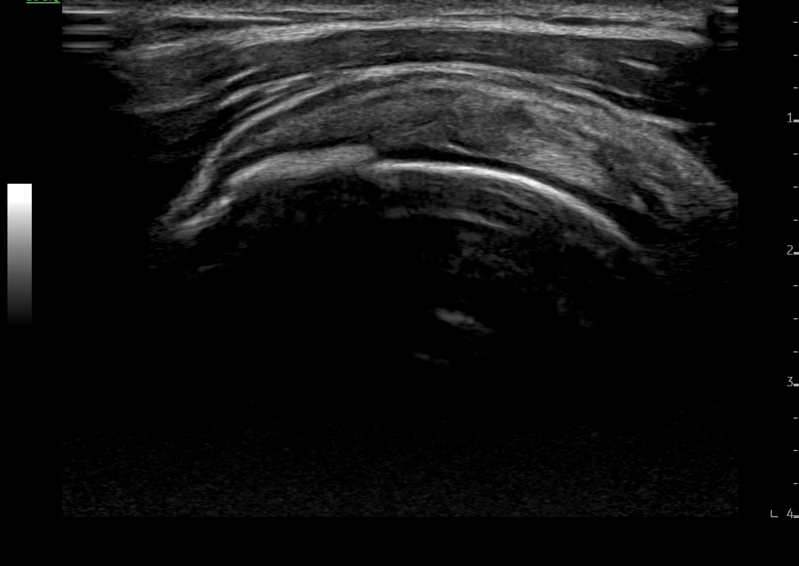
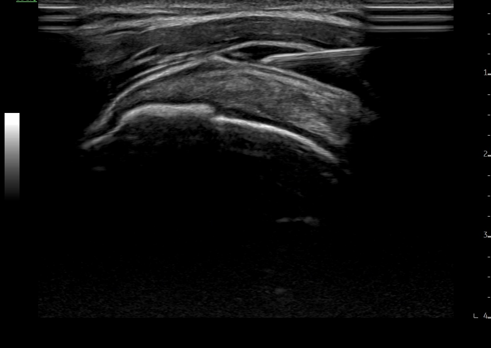

눈으로 확인하며 놓는 약침으로,
정확하고 안전한 치료를 지향합니다.
진단의 정확성을 높이는 녹용약침시술
고해상도 초음파로 신경·근육·인대·건의 상태를 직접 확인한 뒤 치료 계획을 세웁니다.
약침이 들어가는 위치와 깊이를 초음파 화면으로 실시간 확인하면서 시술하기 때문에, 정확한 부위에 필요한 만큼만 주입할 수 있습니다.
초음파로 혈관과 신경의 위치를 미리 확인한 뒤 약침을 주입하여 시술의 안전성을 높입니다.
해나무한의원의 녹용약침은 신경을 압박하고 있는 유착 조직을 풀어준 뒤, 손상된 신경과 주변 조직에 영양 공급 및 회복을 돕는 성분을 전달하는 방식으로 진행됩니다.
신경 주변 유착 조직을 박리하여 압박을 완화합니다.
녹용약침의 자양강장 효능을 통해 회복을 지원합니다.
미세혈류 개선을 통해 회복을 지원합니다.
해나무한의원에서는 녹용약침을 사용합니다. 녹용은 예로부터 뼈와 근육, 관절을 튼튼하게 하고 정기를 보충하는 대표적인 한약재로, 손상된 조직의 회복을 돕는 데 활용되어 왔습니다.
통증 부위를 초음파로 스캔하여 유착된 조직, 신경 주변 부종, 염증 소견을 확인합니다.
초음파 화면을 보며 신경과 주변 조직 사이로 약침을 정확히 주입하여, 유착을 박리하고 통증의 원인에 접근하는 치료를 시행합니다.
추나요법으로 근육을 이완시키고 척추의 정렬을 교정하여 재발 예방을 위해 관리합니다. 또한 척추관절이 약한 분들께는 체질에 맞는 한약을 병행 처방합니다.
아닙니다. 해나무한의원의 약침은 녹용을 정제한 한약재 성분으로 조제되는 한의학적 치료입니다.
시술 자체는 10~15분 내외로 짧고, 초음파로 정확한 위치를 확인하며 진행하기 때문에 불필요한 통증을 최소화합니다. 시술 부위에 일시적인 통증이나 멍이 발생할 수 있으나 대부분 수일 내 호전되며, 개인에 따라 반응이 다를 수 있어 시술 전 충분히 상담드립니다.
증상과 부위, 개인의 상태에 따라 치료 횟수와 기간은 달라집니다. 진료 시 초음파 소견을 바탕으로 예상 치료 계획을 안내드립니다.
네, 통증이 소실되면 추가 시술은 필요하지 않습니다. 다만 재발 방지를 위해 주기적인 물리치료와 관리 한약을 권장드립니다.
초음파 화면으로 신경·혈관의 위치와 약침이 주입되는 부위를 실시간으로 확인하며 시술합니다.


| 구분 | 진료 시간 | 점심 시간 |
|---|---|---|
| 평일 (월~금) | 09:30 - 19:00 | 13:00 - 14:00 |
| 토요일 | 09:30 - 13:00 | 점심시간 없이 진료 |
| 일요일 및 공휴일 | 휴진 | - |